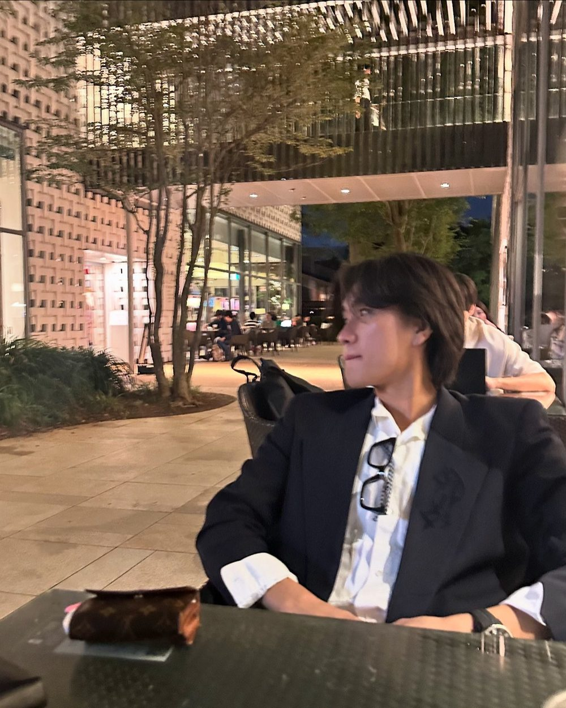

Presto ♩ = 184
Music Japan Partners — BP-008BE.PRESTO
価値が埋もれる前に、
世の中へ響かせる。
BE.PRESTO株式会社は、SNSと広告、研修、人材の力で、埋もれかけた企業や個人の「声」を掘り起こし、世の中に届く「響き」に変える会社です。SNS運用、法人向けのAI研修、人材紹介。3つの事業で、価値を最速で、本来届くべき場所へ届けます。
BE.PRESTOが鳴らすもの
- 採用につながる発信
- 現場で使えるAI
- 企業と個人の、正しい出会い
- 言葉になっていなかった魅力
- SNS運用・広告
- 法人向けAI研修
- 人材紹介 BE.CAREER
00Prologue
PRESTOは、
楽譜の上では「速く」。
PRESTO（プレスト）はイタリア語で「速く」。楽譜に書かれると、もっとも速いテンポのひとつを指す速度記号になります。
BE.PRESTOが掲げている言葉は「Be Fast to Ring the Bell」。企業の声も、個人の可能性も、最速で本来届くべき場所へ。その鐘を鳴らす存在であり続ける、と書かれています。
音楽をつくる会社として、Music Japanにはこの社名と言葉が、まずテンポとして聞こえました。だからこのページは、そのテンポで組んでいます。
- Grave40
- Largo50
- Adagio70
- Andante92
- Moderato112
- Allegro138
- Vivace160
- Presto184
- Prestissimo200+
速度記号の名前と速さ（BPM）の目安は一般的なものを、Music Japanが並べました。楽譜や時代によって幅があります。社名の由来をBE.PRESTOが説明したものではありません。
01Tempo
あなたの会社の発信は、
いま、どのテンポ？
BE.PRESTOのサイトには、発信や採用、AI活用でよくある悩みが並んでいます。それを遅い順に、速度記号へ置き換えてみました。つまみを右へ動かすと、テンポが上がっていきます。
Largo
♩ = 40
幅広く、ゆるやかに
いまの状態
止まっている
投稿が続かない。SNS運用を外注に頼りきりで、社内では回せない。
BE.PRESTOなら
TikTok・Instagram・YouTube・X・Threadsの運用を、企画から撮影、運用、広告までまとめて引き受けます。
テンポの5段階は、BE.PRESTOの公式サイトにある「よくある課題」と支援内容を、Music Japanが速度記号にたとえて並べたものです。BPMは各速度記号のおおよその目安です。
02Three Bells
3つの鐘で、
価値を響かせる。
BE.PRESTOの事業は大きく3つ。SNSで「知ってもらう」、研修で「使えるようにする」、人材紹介で「出会わせる」。鳴らし方はちがっても、埋もれている価値を届くところまで運ぶ、という点で同じ方向を向いています。
-
BELL ISNS Solution
SNS運用 / 広告運用
認知から、
集客と採用まで。TikTok・Instagram・YouTube・X・Threadsの運用と、広告運用。認知の拡大から集客・採用までを一気通貫で支え、ブランドのファンを育てます。採用に特化したSNS運用代行は月額10万円で、動画の制作から、求職者との事前面談、採用専用の公式LINEの構築まで含みます。
採用SNSの公式サイトを見る（新しいタブで開きます） -
BELL IIEducation
法人向けAI研修 / SNS・動画研修
学んで、
終わらせない。生成AIとSNS・動画の、実践型の企業研修です。ChatGPT・Gemini・Microsoft Copilot・Claudeに対応し、8つの職務ごとに全8回・11時間20分のカリキュラムを用意しています。ゴールに置いているのは「現場で明日から実装できる状態」です。
教育事業のページを見る（新しいタブで開きます） -
BELL IIIHuman Resources
人材紹介 BE.CAREER
企業と個人を、
正しく出会わせる。有料職業紹介の許可（13-ユ-319150）を持つ人材紹介事業「BE.CAREER」。20代のキャリア支援や、ハイクラス営業職の採用支援を通じて、企業と個人の最適なマッチングをつくり、双方の成長を加速させます。
ハイクラス営業採用のサイトを見る（新しいタブで開きます）
事業の呼び方と説明は、BE.PRESTOの公式サイトと各サービスサイトにもとづきます。鐘のアイコンを押すと、それぞれちがう高さで鳴ります。
03Measures
数字で聴く、BE.PRESTO。
数字は、BE.PRESTOの採用SNS運用サービスの公式サイト（支援実績・総再生回数・運用開始までの日数）と、教育事業のページ（AI研修の回数と総時間）に掲載されている内容です（2026年10月時点）。
04Score
AI研修を、
8小節のスコアで。
BE.PRESTOの職務別AI研修は、1回85分×全8回。共通・職務別・ツール別の3部で組まれています。職務とAIツールを選ぶと、8回の流れが入れ替わります。
STEP 01 — 職務を選ぶ
STEP 02 — AIツールを選ぶ
マーケティング・販促 × ChatGPT
第1部 共通
第2部 職務別
第3部 ツール別
受講後にできるようになること
カリキュラムの内容は、BE.PRESTOの教育事業ページに掲載されている職務別カリキュラムをもとに、Music Japanが短くまとめたものです。実際の内容は、企業の状況に合わせて調整されます。
05Chord
誠実、共創、挑戦。
3つの音で、和音になる。
BE.PRESTOのバリューは3つ。ひとつずつでも鳴りますが、重ねると和音になります。音符を押すと、その音が鳴ります。
- 挑戦未だ見ぬ景色に、まず一歩踏み出す。
- 共創お客様も仲間も、共に主役。
- 誠実偽りなく、リアルだけを届ける。
バリューの言葉は、BE.PRESTOの公式サイト「企業理念」より。3つを三和音（ド・ミ・ソ）にたとえたのは、Music Japanです。
06Profile
子安魁さんを、
雑誌の表紙風に。
BE.PRESTOの仕事は、まだ言葉になっていない魅力を見つけて、世の中に届く形に整えること。せっかくなので、その会社の代表、子安魁さんを一冊の表紙にしてみました。
- 役職
- BE.PRESTO株式会社 代表取締役CEO
- 設立
- 2024年4月
- 事業
- SNSソリューション / AI研修 / 人材紹介
表紙のコピーは、BE.PRESTOの公式サイトの代表メッセージと、子安さんがXなどで公開しているプロフィールにもとづきます。実在の雑誌ではありません。

BATON PARTNERS — ISSUE BP-008OCT. 2026
400社+SNS運用の支援実績
2025パリコレ スポンサー認定企業
EST. 2024東京・荻窪
BE FAST TO RING THE BELL
本気で生きている人が、
報われる社会へ。
子安 魁 BE.PRESTO 代表取締役CEO
BE.PRESTOは、
どんな会社？
2024年4月に設立された東京・荻窪の会社で、代表取締役CEOは子安魁さんです。「未だ見ぬ景色を、共に創る。」をビジョンに掲げ、SNSソリューション、法人向けのAI・SNS研修、人材紹介のBE.CAREERを手がけています。お客様が見たことのない景色にたどり着くこと、そして自分たち自身が上場企業へ成長すること。ビジョンの「景色」には、その2つの意味が込められているそうです。
- 会社名
- BE.PRESTO株式会社
- 代表
- 代表取締役CEO 子安 魁
- 設立
- 2024年4月
- 所在地
- 〒167-0051 東京都杉並区荻窪3-47-15 第3野村ビル4階
- 資本金
- 1,000万円
- 許可番号
- 有料職業紹介 13-ユ-319150
- 事業内容
- SNSソリューション事業・インフルエンサー事業・広告運用事業・SNS研修事業・AI研修事業・人材紹介業（BE.CAREER）
会社概要とビジョンの説明は、BE.PRESTO公式サイト「私たちについて」より。設立年月は、公開されている企業情報にもとづきます（2026年10月時点）。
FineTalk
BE.PRESTOと、
まずは話してみる。
SNSでの採用や集客、社内のAI活用、研修の相談など。予約カレンダーはありません。Music Japanがご相談内容を確認し、双方の了承を得てからLINEでおつなぎします。